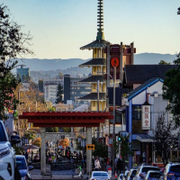
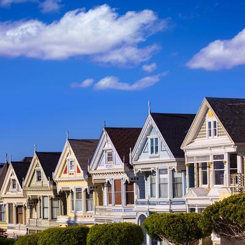
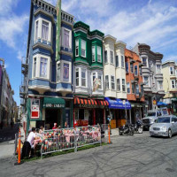
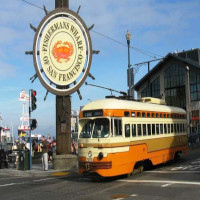
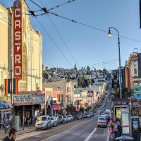

North Beach AKA Little Italy

Fishermans Wharf

Growing up, I lived in the same city for about 19 years. I wanted to leave my comfort zone and live away from home. When applying to college, I picked schools away from home, so it's easier to go back and forth between home and school. One of the schools I chose was San Francisco State because I visited the city once and fell in love with it. I definitely wanted to see what it felt like living there on my own. Out of my two options, I choose that school to go to college. Despite only going for a year because of the cost of housing, I really enjoyed my time there and would like to share some of the places I enjoyed while I was over there.